5040A20 air conditioner compressor - r+r - includes fluid level check and top up if necessary
- Path
- Procedures > 50 AUXILIARY UNITS > 5040 AIR CONDITIONING CASING AND COMPONENTS > 5040A air conditioner coolant circuit > 5040A20 air conditioner compressor - r+r - includes fluid level check and top up if necessary
- Kind
- repair procedure (removal / refitting; the operation number is the code)
- Applies to
- all engines; all production periods
- Interactive page
- https://sloeber94.github.io/elrnDB-a147/en/#/3025412
Applies to: all engines; all production periods
Applies to: engines: 1.6 TS, 2.0 TS; all production periods
 Removing
Removing
 Refitting
Refitting7055B54 under-engine guard - r r
7055B64 Engine compartment DUST shield in front wheel arch (one), left or right - R.R. (right side)
Drain the refrigerant (5040A10 Air conditioning refrigerant CIRCUIT - Draining and Refilling ).
1. Working on the right side of the engine compartment, undo the bolts and the nut fixing the services belt guard.
2. Remove the services belt guard.
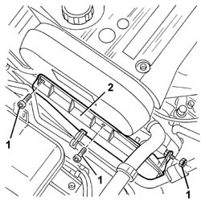
Applies to: engines: 1.6 TS, 2.0 TS; all production periods
1. Disconnect the electrical connection.
 | Name | Connector |
|---|---|---|
1 | Air conditioning compressor engagement electro-magnet |
2. Undo the bolt fixing the pipe connector.
3. Disconnect the pipe and move it.
4. Undo the nut.
5. Move the bracket with the connector for the Lambda sensor.
6. Undo the upper bolts fixing the compressor.
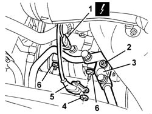
Applies to: engines: 1.6 TS, 2.0 TS; all production periods
Raise the car.
1. Fit a spanner (1a) on the tensioner nut (1b) and rotate it until the belt (1c) can be released from the compressor pulley (1d).
2. Undo the lower bolts fixing the compressor.
3. Remove the compressor.
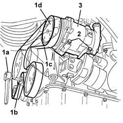
Applies to: engines: 1.6 TS, 2.0 TS; all production periods
If replacing the compressor, proceed as follows.
1. Remove the plug for the compressor being replaced.
Drain the fluid contained in the compressor. If necessary, rotate the compressor several times, manually, to remove all the fluid.
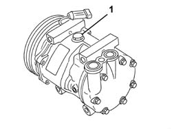
Applies to: engines: 1.6 TS, 2.0 TS; all production periods
1. Recover the fluid drained from the compressor in a suitable transparent container (quantity A).
2. Drain and recover the fluid from the new compressor (quantity B) in an identical container, following the instructions given previously.
3. Introduce the same amount of fluid removed from the compressor being replaced into the new compressor (eliminate quantity C = B - A).
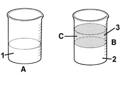
Applies to: engines: 1.6 TS, 2.0 TS; all production periods
Refitting
RemovingCheck that the compressor is not damaged.
Reposition the compressor.
Tighten the lower bolts fixing the compressor.
Fit a spanner on the tensioner nut and rotate it until it is possible to fit the belt on the compressor pulley.
Lower the vehicle.
Tighten the upper bolts fixing the compressor.
Position the bracket with the connector for the Lambda sensor and secure it using the nut.
Follow these precautions.
Position the pipe connector and tighten the fixing bolt.
 | Fastening | Component | Ø | Value (daNm) |
|---|---|---|---|---|
- | Bolt | COMPRESSOR PIPE CONNECTORS | M10 x 1.25 | 3.5 |
Connect the electrical connection.
Position the services belt guard and secure it using the bolts and the nut.
7055B64 Engine compartment DUST shield in front wheel arch (one), left or right - R.R.
7055B54 under-engine guard - r r
Repressurize using refrigerant (5040A10 Air conditioning refrigerant CIRCUIT - Draining and Refilling ).
Applies to: all engines; all production periods
Applies to: engines: 3.2 V6; all production periods
Removing
RefittingPosition the vehicle on the ramp.
Ensure that the ignition key is in the OFF position, then disconnect the negative battery terminal (-).
| Name | Connector |
|---|---|---|
- | Battery |
Drain the air conditioner coolant circuit 5040A10 Air conditioning refrigerant CIRCUIT - Draining and Refilling .
Proceed with removal 4450B04 right front wheel r r .
Proceed with removal 7055B66 Engine compartment DUST SHIELD protection in right front wheel arch - R.R. .
Proceed with removal 1092G10 single engine belt r r .
Proceed with removal 7055B54 under-engine guard - r r .
1. Release the electrical wiring for the Lambda probe from its fastening on the air conditioner compressor.
2. Disconnect the electrical connection for the air conditioning compressor electromagnet coupling.
| Name | Connector |
|---|---|---|
2 | Air conditioning compressor engagement electro-magnet |
3. Undo the bolt (3a) and disconnect the coolant inlet and outlet pipes (3b) from the air conditioning compressor.
4. Undo the bolts (4a) and remove the air conditioning compressor (4b).
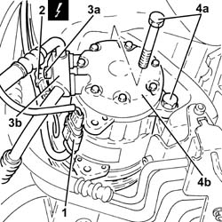
Applies to: engines: 3.2 V6; all production periods
Refitting
RemovingIf the air conditioning compressor is being replaced, proceed as follows.
1. Remove the drain plug and drain the fluid from the compressor.
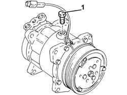
Applies to: engines: 3.2 V6; all production periods
1. Recover the fluid drained from the compressor in a suitable transparent container (quantity A).
2. Drain and recover the fluid from the new compressor (quantity B) in an identical container, following the instructions given previously.
3. Introduce the same amount of fluid removed from the compressor being replaced into the new compressor (eliminate quantity C = B - A).
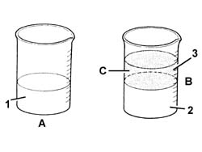
Applies to: engines: 3.2 V6; all production periods
1. Place the air conditioning compressor (1a) back in its housing and fix it tightening the bolts (1b) to the recommended torque.
| Fastening | Component | Ø | Value (daNm) |
|---|---|---|---|---|
1b | Bolt | AIR CONDITIONER ASSEMBLY COMPRESSOR | M10 | (Support side) 4.5 ÷ 5.5 |
2. Connect the flange for the coolant inlet and outlet pipes (2a) to the air conditioning compressor and tighten the bolt (2b) to the recommended torque.
| Fastening | Component | Ø | Value (daNm) |
|---|---|---|---|---|
2b | Bolt | COOLANT SYSTEM FITTINGS | M6 | 0.7 ÷ 1.1 |
3. Connect the electrical connection to the air conditioning compressor electromagnet coupling.
4. Secure the Lambda sensor electrical wiring to the fastening on the air conditioner compressor.
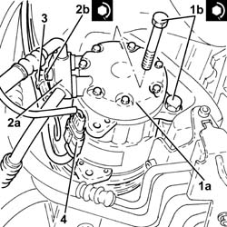
Applies to: engines: 3.2 V6; all production periods
Proceed with refitting 1092G10 single engine belt r r .
Proceed with refitting 7055B66 Engine compartment DUST SHIELD protection in right front wheel arch - R.R. .
Proceed with refitting 4450B04 right front wheel r r .
Connect the negative (-) battery terminal
Fill the air conditioner coolant circuit 5040A10 Air conditioning refrigerant CIRCUIT - Draining and Refilling .
Proceed with refitting 7055B54 under-engine guard - r r .
Remove the car from the ramps.
Applies to: all engines; all production periods
Applies to: engines: 1.9 JTD 8V; all production periods
Removing
Refitting7055B54 under-engine guard - r r
7055B66 Engine compartment DUST SHIELD protection in right front wheel arch - R.R.
Drain the refrigerant (5040A10 Air conditioning refrigerant CIRCUIT - Draining and Refilling ).
1. Disconnect the electrical connection.
| Name | Connector |
|---|---|---|
1 | Air conditioning compressor engagement electro-magnet |
2. Undo the bolt fixing the pipe connector.
3. Disconnect the pipe and move it.
4. Undo the nut.
5. Release the bracket and move the pipe away.
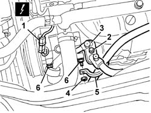
Applies to: engines: 1.9 JTD 8V; all production periods
Raise the car.
1. Fit a spanner (1a) on the tensioner nut (1b) and rotate it until the belt (1c) can be released from the compressor pulley (1d).
2. Undo the lower bolts fixing the compressor.
3. Remove the compressor.
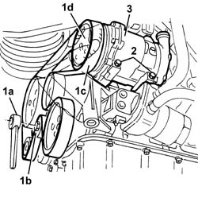
Applies to: engines: 1.9 JTD 8V; all production periods
If replacing the compressor, proceed as follows.
1. Remove the plug for the compressor being replaced.
Drain the fluid contained in the compressor. If necessary, rotate the compressor several times, manually, to remove all the fluid.
Applies to: engines: 1.9 JTD 8V; all production periods
1. Recover the fluid drained from the compressor in a suitable transparent container (quantity A).
2. Drain and recover the fluid from the new compressor (quantity B) in an identical container, following the instructions given previously.
3. Introduce the same amount of fluid removed from the compressor being replaced into the new compressor (eliminate quantity C = B - A).
Applies to: engines: 1.9 JTD 8V; all production periods
Refitting
RemovingCheck that the compressor is not damaged.
Reposition the compressor.
Tighten the lower bolts fixing the compressor.
Fit a spanner on the tensioner nut and rotate it until it is possible to fit the belt on the compressor pulley.
Lower the vehicle.
Tighten the upper bolts fixing the compressor.
Position the pipe and secure it with the nut to the relevant bracket.
Follow these precautions.
Position the pipe connector and tighten the fixing bolt.
| Fastening | Component | Ø | Value (daNm) |
|---|---|---|---|---|
- | Bolt | COMPRESSOR PIPE CONNECTORS | M10 x 1.25 | 3.5 |
Connect the electrical connection.
7055B66 Engine compartment DUST SHIELD protection in right front wheel arch - R.R.
7055B54 under-engine guard - r r
Repressurize using refrigerant (5040A10 Air conditioning refrigerant CIRCUIT - Draining and Refilling ).
Applies to: all engines; all production periods
Applies to: engines: 1.9 JTD 16V; all production periods
Removing
RefittingPosition the vehicle on the ramp.
Proceed with removal 7025A12 Engine front sound insulation COVER - R.R. .
Proceed with removal 7025A14 Bonnet LID - R.R. .
Proceed with removal 1016A10 sound-proofing cover - r + r .
Ensure that the ignition key is in the OFF position, then disconnect the negative battery terminal (-).
| Name | Connector |
|---|---|---|
- | Battery |
Drain the air conditioner coolant circuit 5040A10 Air conditioning refrigerant CIRCUIT - Draining and Refilling .
1. Disconnect the electrical connection for the air conditioning compressor electromagnet coupling.
| Name | Connector |
|---|---|---|
1 | Air conditioning compressor engagement electro-magnet |
2. Undo the bolt (2a) and disconnect the coolant fluid inlet and outlet pipes (2b) from the air conditioning compressor.
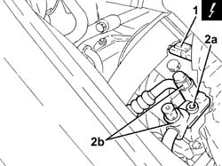
Applies to: engines: 1.9 JTD 16V; all production periods
Proceed with removal 4450B04 right front wheel r r .
Proceed with removal 7055B54 under-engine guard - r r .
Proceed with removal 7055B91 Right front WHEEL ARCH LINER - R.R. .
Proceed with removal 1092G10 single engine belt r r .
1. Undo the bolt (1a) and disconnect the cooling radiator engine oil supply pipe (1b), engine oil filter mounting side.
2. Undo the bolt (2a) and disconnect the cooling radiator engine oil return pipe (2b), engine oil filter mounting side.
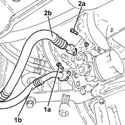
Applies to: engines: 1.9 JTD 16V; all production periods
1. Undo the bolts (1a) and remove the air conditioning compressor (1b).
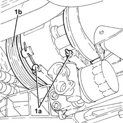
Applies to: engines: 1.9 JTD 16V; all production periods
Refitting
RemovingIf the air conditioning compressor is being replaced, proceed as follows.
1. Remove the drain plug and drain the fluid from the compressor.
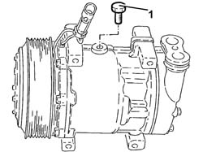
Applies to: engines: 1.9 JTD 16V; all production periods
1. Recover the fluid drained from the compressor in a suitable transparent container (quantity A).
2. Drain and recover the fluid from the new compressor (quantity B) in an identical container, following the instructions given previously.
3. Introduce the same amount of fluid removed from the compressor being replaced into the new compressor (eliminate quantity C = B - A).
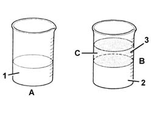
Applies to: engines: 1.9 JTD 16V; all production periods
1. Place the air conditioning compressor (1a) back in its housing and fix it tightening the bolts (1b) to the recommended torque.
| Fastening | Component | Ø | Value (daNm) |
|---|---|---|---|---|
1b | Bolt | AIR CONDITIONER ASSEMBLY COMPRESSOR | M8 | (Support side) 2.3 ÷ 2.8 |
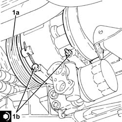
Applies to: engines: 1.9 JTD 16V; all production periods
Connect the engine oil return pipe from the cooling radiator, engine oil filter mounting side, and tighten the bolt.
Connect the engine oil supply pipe to the cooling radiator, engine oil filter mounting side, and tighten the bolt.
Proceed with refitting 1092G10 single engine belt r r .
Proceed with refitting 7055B91 Right front WHEEL ARCH LINER - R.R. .
Proceed with refitting 7055B54 under-engine guard - r r .
Proceed with refitting 4450B04 right front wheel r r .
1. Connect the flange for the coolant inlet and outlet pipes (1a) to the air conditioning compressor and tighten the bolt (1b) to the recommended torque.
| Fastening | Component | Ø | Value (daNm) |
|---|---|---|---|---|
1b | Bolt | COOLANT SYSTEM FITTINGS | M10 | 2.8 ÷ 4.2 |
2. Connect the electrical connection to the air conditioning compressor electromagnet coupling.
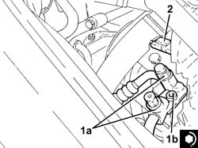
Applies to: engines: 1.9 JTD 16V; all production periods
Connect the negative (-) battery terminal.
Refill the engine oil lubrication system 0010T11 engine oil check level and top up .
Fill the air conditioner coolant circuit 5040A10 Air conditioning refrigerant CIRCUIT - Draining and Refilling .
Proceed with refitting 1016A10 sound-proofing cover - r + r .
Proceed with refitting 7025A14 Bonnet LID - R.R. .
Proceed with refitting 7025A12 Engine front sound insulation COVER - R.R. .
Remove the car from the ramps.
Topics linked from this page (15)
- 0010T11 engine oil check level and top up
- 1016A10 sound-proofing cover - r + r
- 1092G10 single engine belt r r
- 4450B04 right front wheel r r
- 5040 AIR CONDITIONING CASING AND COMPONENTS
- 5040A air conditioner coolant circuit
- 5040A10 Air conditioning refrigerant CIRCUIT - Draining and Refilling
- 7025A12 Engine front sound insulation COVER - R.R.
- 7025A14 Bonnet LID - R.R.
- 7055B54 under-engine guard - r r
- 7055B64 Engine compartment DUST shield in front wheel arch (one), left or right - R.R.
- 7055B66 Engine compartment DUST SHIELD protection in right front wheel arch - R.R.
- 7055B91 Right front WHEEL ARCH LINER - R.R.
- A1B Battery ( Connectors )
- L20 Air conditioning compressor engagement electro-magnet
Topics that link to this page (8)
- L12 CLIMATE CONTROL TOO COLD
- S10 ENGINE WHILSTLING / SERVICES BELT NOISY'
- 1008A46 cam shaft left rigid mount - r r
- 1072C12 exhaust manifold - r r
- 1072C13 exhaust manifold gasket - replace
- 1088D24 rigid pipe for coolant inlet to water pump - r + r
- 5040A25 compressor bracket - r r
- 5040A26 compressor mount - r r